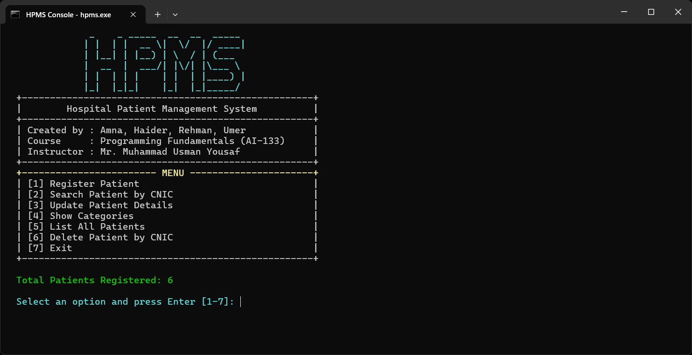

Hospital Patient Management System
A C++ console app from my first semester. It lets you add, update, search, and organize patient records based on symptoms. It taught us file handling, modular programming, and teamwork.
View on GitHub →